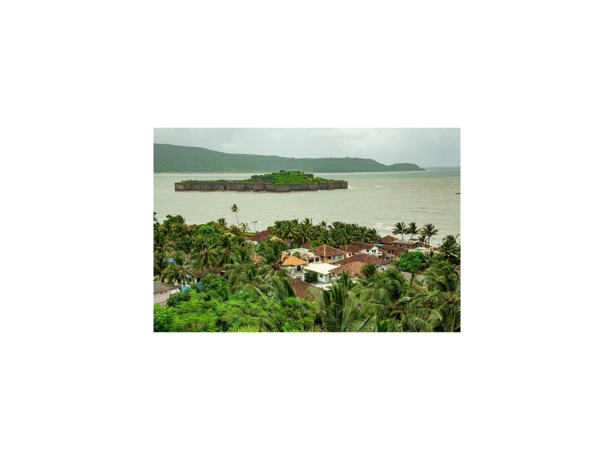

1 Day
1 Day1-Day Taj Mahal & Agra Fort: Private Day Journey from Delhi
Sunrise-fresh light on the Taj Mahal and the red sandstone courts of Agra Fort, in a single private day from Delhi, with your own guide and car.
View journey → 1 Day
1 Day1-Day Imperial Delhi & Spiritual Heritage: Private Full-Day Tour
Old Delhi's lanes, Mughal tombs and sacred sites of three faiths, paced around you in one private day.
View journey → 1 Day
1 Day1-Day Jaipur Royal Express: Private Tour from Delhi
Amber Fort, the City Palace and the Pink City's best-known sights in one long day from Delhi, for travellers who have only a day to give.
View journey →2 Days2-Day Agra & Jaipur Express: Taj Mahal & the Pink City
The Taj Mahal at sunset and the forts and palaces of Jaipur, on a fast overnight that rewards early risers.
View journey → 2 Days
2 Days2-Day Khajuraho & Panna: UNESCO Temples & Tigers Express
The carved temples of Khajuraho and a morning tiger safari in Panna, joined in one tightly planned weekend.
View journey → 3 Days
3 Days3-Day Golden Triangle Essentials: Delhi, Agra & Jaipur
Delhi, Agra and Jaipur in three days: the essentials of India's classic circuit, with a private guide throughout.
View journey →4 Days4-Day Express Golden Triangle: Delhi, Jaipur & Agra
The complete Golden Triangle in four days, from Old Delhi's lanes to Jaipur's forts, Fatehpur Sikri and a sunrise at the Taj.
View journey →4 Days4-Day Khajuraho & Varanasi: Temples, Tigers & Sacred Ganges
Khajuraho's temples, a Panna tiger safari and the Ganges at Varanasi: from sculpture to ritual in four days.
View journey → 5 Days
5 Days5-Day Sacred India: Ganges, Buddha & Ancient Empires
A pilgrimage through Varanasi, Bodh Gaya, Nalanda and Patna: the Ganges, the Buddha's path and ancient empires.
View journey →5 Days5-Day Classic Golden Triangle: Royal Rajput & Mughal Journey
A classic Golden Triangle with room to breathe: Jaipur's hill forts, the Chand Baori stepwell and a sunrise at the Taj.
View journey → 5 Days
5 Days5-Day Eastern Himalaya: Darjeeling, Kalimpong & Gangtok
Tea estates, monasteries and Kanchenjunga at sunrise across Darjeeling, Kalimpong and Gangtok.
View journey → 6 Days
6 Days6-Day Golden Triangle & Wildlife Escape: Heritage to Bharatpur
The Golden Triangle paired with Keoladeo's wetlands, for travellers who want heritage and birdlife in one journey.
View journey →7 Days7-Day Temples, Ganges & Buddha Trail: Delhi to Patna
Temples, tigers, the Ganges and the Buddha's footsteps in seven days from Khajuraho to Patna.
View journey →8 Days8-Day Golden Triangle & Khajuraho: Mughal, Rajput & Chandela Heritage Trail
From the Taj and the forts of Jaipur to Gwalior, Orchha and Khajuraho: eight days across Mughal, Rajput and Chandela India.
View journey → 8 Days
8 Days8-Day Rajputana Citadel Quest: Delhi to Udaipur
Rajasthan's great hill forts and lakes, from Jaipur to Jodhpur and Udaipur, with Kumbhalgarh and Chittorgarh along the way.
View journey → 8 Days
8 Days8-Day Himalayan Heritage Rail: Toy Train, Kullu Valley & McLeod Ganj
The UNESCO Toy Train, colonial Shimla, the Kullu Valley and the Tibetan hills of McLeod Ganj in eight days.
View journey →9-Day Himalayan Panorama & Golden Temple Traverse
Himalayan hill towns and monasteries, ending at the Golden Temple in Amritsar, over nine days.
View journey → 16 Days
16 Days16-Day Taj, Tigers & Forts: The Grand Rajasthan Odyssey
Sixteen days of Rajasthan's forts, desert dunes, tiger safaris and the Taj, for those who want the whole picture.
View journey →2 Days2-Day Agra, Fatehpur Sikri & Imperial Mughal Retreat
A well-paced Mughal weekend in Agra: the Taj at sunrise and sunset, Agra Fort, Fatehpur Sikri and the imperial tombs.
View journey →2 Days2-Day Jaipur Royal Pink City & Abhaneri Stepwell Escape
Chand Baori's ancient stepwell and Jaipur's forts and palaces over two days, with sunset from Nahargarh.
View journey → 9 Days
9 Days9-Day Deccan Caves & Citadels: Elephanta, Ellora, Ajanta & Daulatabad
Ajanta, Ellora, Elephanta and Daulatabad: nine days among India's most remarkable rock-cut caves and Deccan forts.
View journey →
13 Days13-Day Empires of the Sahyadri: Marine Forts, Cave Temples & Meteorite Crater
Sea forts, Shivaji's citadel, the Ajanta and Ellora caves and Lonar's meteorite crater across thirteen days of Maharashtra.
View journey →Tell me your dates and interests
I will personally prepare an itinerary and quotation within 24 hours. No groups, no fixed scripts.